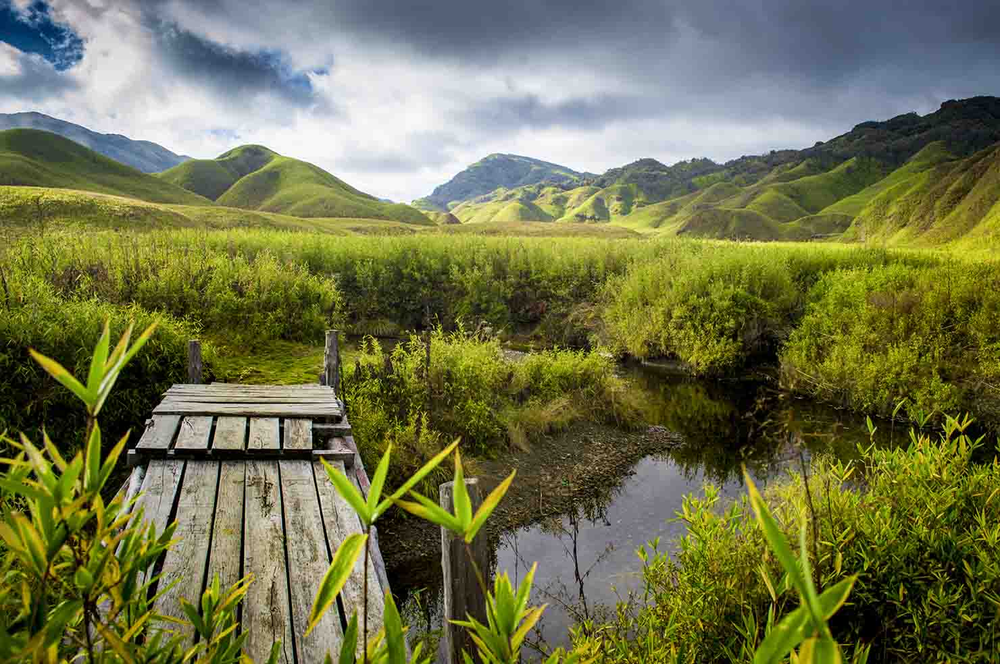
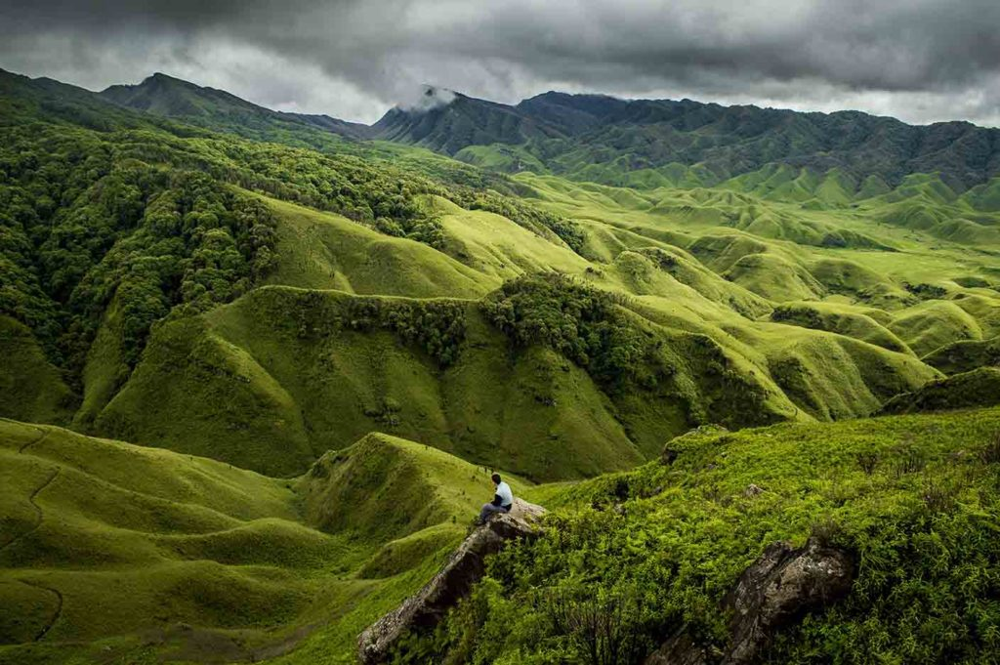
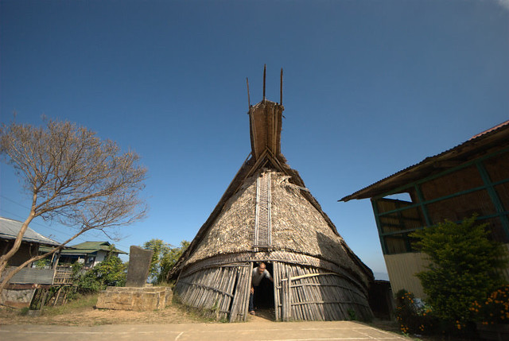
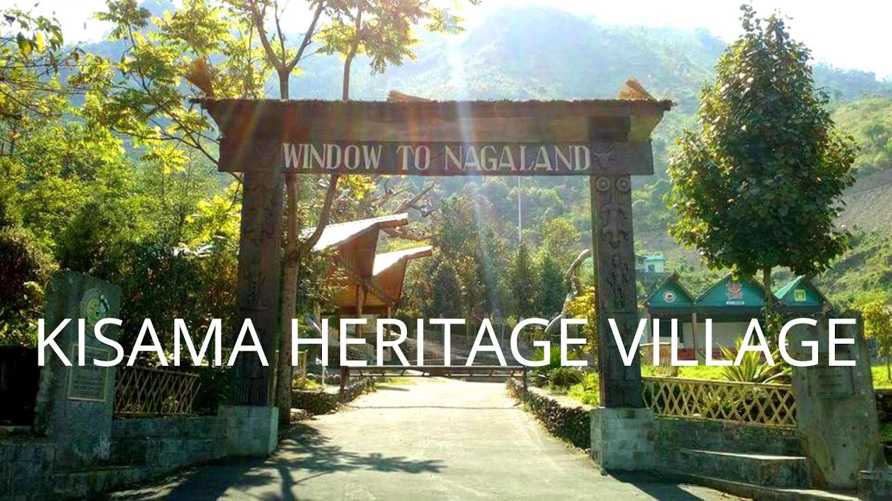
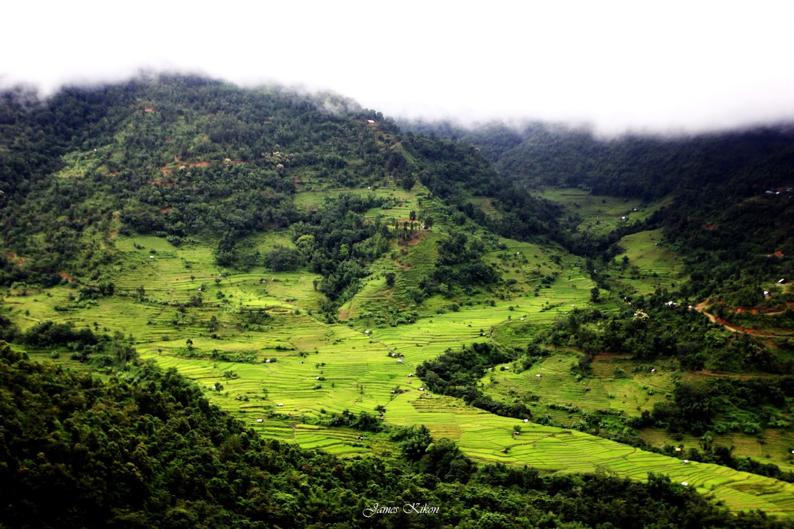
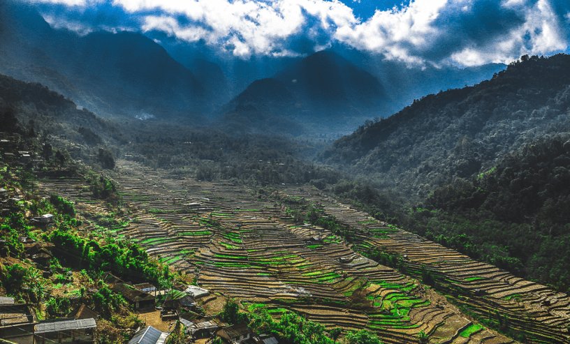

NAGALAND
DZUKOU VALLEY
Dzukou Valley is a picturesque valley located on the border of the Indian states of Nagaland and
Manipur, in the northeastern region of India. It's renowned for its breathtaking natural beauty,
comprising lush greenery, rolling hills, and vibrant flora. The valley is nestled at an altitude of
around 2,452 meters above sea level, making it a haven for trekkers, nature enthusiasts, and
photographers.
The name "Dzukou" is derived from the Angami Naga dialect, where "Dzu" means "cold" and "Kou" means
"water," reflecting the valley's chilly climate and abundant water sources. One of the highlights of
Dzukou Valley is the Dzukou Lily, a rare and beautiful flower that blooms during the monsoon season,
adding to the valley's charm.
Trekking is a popular activity in Dzukou Valley, with various trails offering different levels of
difficulty. The most common trekking route starts from the base camp at Viswema village in Nagaland,
leading to the valley through dense forests and rocky terrain. The journey typically takes around
3-4 hours, offering panoramic views of the surrounding landscape along the way.
Once in the valley, visitors are treated to stunning vistas of rolling hills carpeted with a variety
of flora, including rhododendrons, wildflowers, and bamboo groves. There are also several streams
and waterfalls dotting the landscape, adding to its ethereal beauty.
Dzukou Valley is not only a paradise for nature lovers but also holds cultural significance for the
indigenous Naga tribes, who consider it a sacred place. It's a serene retreat away from the hustle
and bustle of city life, offering a tranquil environment for relaxation and rejuvenation amidst
nature's splendor.


When preparing for a trek, it's essential to have the right equipment to ensure your safety,
comfort, and enjoyment. Here's a list of basic equipment you might need for trekking:
1. **Backpack**
2. **Trekking Boots or Shoes**
3. **Clothing**
4. **Navigation Tools**
5. **Water and Hydration System**
6. **Nutrition**
7. **First Aid Kit**
8. **Emergency Shelter**
9. **Multi-tool or Knife**
10. **Headlamp or Flashlight**
11. **Sun Protection**
12. **Personal Identification and Emergency Contact Information**
Before embarking on any trek, it's crucial to assess the specific requirements of your chosen route
and adjust your packing list accordingly. Additionally, ensure you have the necessary skills and
knowledge to use your equipment effectively and respond to emergencies.
KISAMA HERITAGE VILLAGE
Kisama Heritage Village is a cultural village located near Kohima, the capital city of Nagaland, in
northeastern India. It serves as the venue for the Hornbill Festival, one of the most significant
cultural festivals in Nagaland and the entire northeastern region of India.
The Hornbill Festival, celebrated annually in the first week of December, showcases the rich
cultural heritage of the Naga tribes. Kisama Heritage Village was specifically built to host this
festival and to provide a platform for Naga tribes to exhibit their traditions, customs, arts,
crafts, music, dance, and cuisine.
Key features of Kisama Heritage Village and the Hornbill Festival include:
1.Traditional Naga Architecture: The village is designed to resemble a traditional Naga village,
with various tribal huts representing different Naga tribes. Each hut showcases unique architectural
styles, building materials, and cultural artifacts specific to the respective tribes.
2.Cultural Performances: During the Hornbill Festival, visitors are treated to a colorful array of
cultural performances, including traditional Naga dances, folk songs, indigenous games, and rituals.
These performances offer insights into the diverse cultural practices of the Naga people.
3.Arts and Crafts: The festival provides a platform for Naga artisans to display and sell their
handicrafts, which often include intricately woven textiles, bamboo and cane products, wood
carvings, pottery, jewelry, and traditional attire. Visitors have the opportunity to interact with
artisans and purchase authentic Naga handicrafts.


4.Food and Cuisine: The festival features a variety of Naga cuisines, offering visitors the chance
to savor traditional Naga delicacies and local dishes prepared using indigenous ingredients and
cooking methods. Food stalls and vendors showcase the culinary diversity of the Naga tribes.
5.Cultural Workshops and Exhibitions: Visitors can participate in cultural workshops and
exhibitions that highlight various aspects of Naga culture, including traditional crafts, music,
dance, folklore, and agricultural practices. These interactive sessions provide a deeper
understanding of Naga heritage.
6.Tribal Morungs: Morungs are traditional communal houses used by Naga tribes for social
gatherings, discussions, and ceremonies. At Kisama Heritage Village, visitors can explore
reconstructed morungs and learn about their significance in Naga society.
Overall, Kisama Heritage Village and the Hornbill Festival offer a vibrant platform for celebrating
and preserving the cultural identity of the Naga tribes, fostering intercultural exchange, and
promoting tourism in Nagaland. It's a must-visit destination for those interested in experiencing
the rich cultural tapestry of northeastern India.
KHONOMA
Khonoma is a historic village located in the Kohima district of Nagaland, India, approximately 20
kilometers away from the state capital, Kohima. It holds significant cultural and historical
importance as one of the most prominent and well-preserved villages in Nagaland. Here's more about
Khonoma:
1.History: Khonoma is renowned for its rich history of valor and resistance against British
colonial rule. It was one of the last Naga villages to surrender to the British in the late 19th
century. The village is known for its fiercely independent spirit and its role in the Naga freedom
struggle.
2.Conservation: Khonoma is also notable for its conservation efforts and sustainable practices. It
gained international recognition for its community-led initiatives in biodiversity conservation and
ecological preservation. The Khonoma Nature Conservation and Tragopan Sanctuary (KNCTS) is a
testament to the village's commitment to environmental conservation.
3.Cultural Heritage: The village is home to the Angami Naga tribe, and it boasts a rich cultural
heritage. Visitors to Khonoma can experience traditional Naga architecture, including intricately
carved wooden houses and raised platforms used for community gatherings. The village is also known
for its vibrant festivals, traditional dances, and indigenous crafts.


4.Tourism: In recent years, Khonoma has emerged as a popular tourist destination in Nagaland,
attracting travelers interested in exploring its cultural heritage, natural beauty, and conservation
initiatives. Tourists can engage in activities such as trekking, birdwatching, and village tours to
learn about Khonoma's history, culture, and biodiversity.
5.Dzüko Valley: Khonoma serves as a gateway to the famous Dzüko Valley, a picturesque valley known
for its stunning landscapes, seasonal flowers, and trekking trails. Many visitors to Khonoma also
include a visit to Dzüko Valley in their itinerary.
6.Homestays: The village offers opportunities for immersive cultural experiences through homestays
with local families. Staying in Khonoma provides visitors with a chance to learn about Naga
traditions, cuisine, and way of life firsthand, while also supporting the local community.
Overall, Khonoma is not only a symbol of Naga resilience and cultural pride but also a model for
sustainable development and conservation efforts. Its unique blend of history, culture, and natural
beauty makes it a compelling destination for travelers seeking authentic experiences in Nagaland.